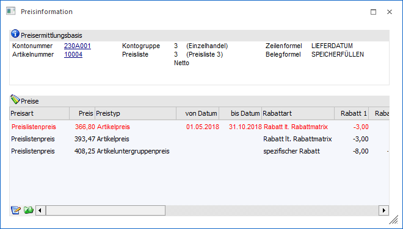
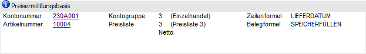
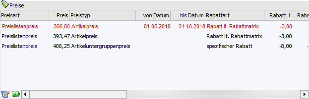
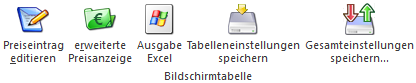
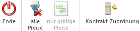
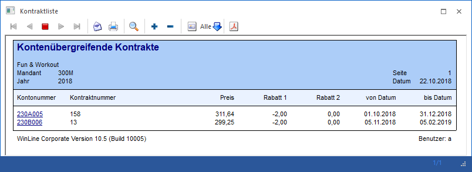
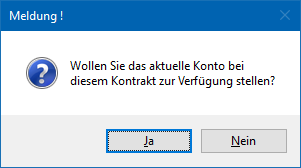
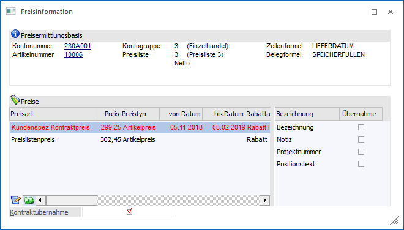

In dem Fenster "Preisinformation" werden alle (gültigen) Preise eines Artikels, bezogen auf einen Kunden bzw. Lieferanten angezeigt. Neben der Anzeige kann durch Auswahl eines Preises (Doppelklick / Enter) dieser in die Belegerfassung, den Kontrakt oder den Bestellvorschlag übergeben werden. Das Fenster als solches kann dabei wie folgt aufgerufen werden:
ü WinLine FAKT - Erfassen - Belegerfassung - Belege erfassen - Register "Mitte" - Taste F8 (Spalte "Preis")
ü WinLine FAKT - Erfassen - Belegerfassung - Belege erfassen - Register "Optionen" - Option "Preisinfo"
ü WinLine FAKT - Erfassen - Belegerfassung - Telesales - Register "Mitte" - Taste F8 (Spalte "Preis")
ü WinLine FAKT - Erfassen - Belegerfassung - Telesales - Register "Optionen" - Option "Preisinfo"
ü WinLine FAKT - Erfassen - Kontraktverwaltung - Kontrakte erfassen - Register "Mitte" - Taste F8 (Spalte "Preis")
ü WinLine FAKT - Erfassen - Kontraktverwaltung - Kontrakte erfassen - Register "Optionen" - Option "Preisinfo"
ü WinLine FAKT - Einkauf - Bestellvorschlag - Bestellvorschlag bearbeiten - Taste F8 (Spalte "Preis")
ü WinLine FAKT - Einkauf - Bestellvorschlag - Bestellvorschlag bearbeiten - Button "Preisinfo öffnen"

Preisermittlungsbasis

In diesem Informationsbereich werden die Basisdaten der Preisfindung dargestellt. D.h. auf Grundlage dieser Daten wird von der WinLine eine Preisfindung durchgeführt.
Tabelle "Preise"

In der Tabelle "Preise" werden die Preise des Artikels, bezogen auf die Preisermittlungsbasis, angezeigt. Sollten keinerlei passenden Preise gefunden werden (siehe auch Button "alle Preise / nur gültige Preise" bzw. "erweiterte Preisanzeige"), so wird in der Tabelle der allgemeine VK-Preis bzw. EK-Preis vorgeschlagen.
Ø Preisart
An dieser Stelle wird angezeigt, um was für eine Art von Preis es sich handelt, d.h. ob es z.B. um einen kundenspezifischen oder eine allgemein gültigen Preis handelt.
Ø Preis
In dieser Spalte wird der Einzelpreis dargestellt.
Ø Preistyp
Beim Preistyp wird angezeigt ob es sich um einen Artikel- oder einen Artikeluntergruppenpreis handelt.
Ø von Datum / bis Datum
In diesen Spalten wird der Gültigkeitszeitraum des Preises (allgemeine Gültigkeit oder Gültigkeit des Kontrakts) dargestellt.
Ø Rabattart
Hier wird angezeigt, um welche Rabattart es sich handelt:
ü Rabatt lt. Rabattmatrix
Wenn
kein gültiger Preis vorhanden ist und der allgemeine Verkaufs- bzw.
Einkaufspreis angezeigt wird.
Wenn ein Preis mit dem Typ Preis und Rabatt
(Typ 0) und der Einstellung "Rabattautomatik vom Artikel" vorhanden ist.
ü spezifischer Rabatt
Wenn ein
Preis mit dem Typ Preis und Rabatt (Typ 0) und der Einstellung "Rabatt in %"
vorhanden ist.
ü spezifische Rabattmatrix
Wenn
ein Preis mit dem Typ Preis und Rabatt (Typ 0) und der Einstellung
"Rabattspalte" vorhanden ist.
ü allgemeiner Rabatt
Wenn ein
Rabatt (Preislisteneintrag mit Typ 2) mit der Preisart "allgemeiner Preis"
vorhanden ist.
ü Gruppenrabatt
Wenn ein Rabatt
(Preislisteneintrag mit Typ 2) mit der Preisart "Gruppenpreis" vorhanden
ist.
ü Kontenrabatt
Wenn ein Rabatt
(Preislisteneintrag mit Typ 2) mit der Preisart "Kontenpreis" vorhanden ist
Ø Rabatt 1 / Rabatt 2
In diesen Spalten werden die Rabatt-%-Sätze dargestellt.
Ø Ab Menge
An dieser Stelle wird die Stückzahl angezeigt, ab wann der Preis / Rabatt gelten soll.
Ø Ersatzartikelnr. / Ersatzartikelbez.
In diesen Spalten werden die Artikelnummer und -bezeichnung des Lieferanten bzw. des Kunden angezeigt.
Ø Kontrakte
Die folgenden Spalten werden bei einem Kontraktpreis gefüllt und geben Informationen über jenen wieder:
ü Kontraktnummer
ü Kontraktstatus
ü Menge Fakturiert (ist jene Menge aus dem Kontrakt die bereits fakturiert wurde)
ü Menge Geliefert (jene Menge aus dem Kontrakt die bereits ausgeliefert wurde)
ü Menge Bestellt (jene Menge aus dem Kontrakt die bereits in eine Bestellung umgewandelt wurde)
ü Menge Soll (vereinbarte Abnahmemenge im Zuge des Rahmenvertrages)
ü Wert Ist (bisheriger Abnahmewert im Zuge des Rahmenvertrages auf Basis der Einstellung in den FAKT-Parametern: bestellte Mengen; gelieferte Menge; fakturierte Menge)
ü Wert Soll (vereinbarter Abnahmewert im Zuge des Rahmenvertrages)
Ø Notiz
An dieser Stelle kann die Notiz / Beschreibung des Preislisteneintrags dargestellt.
Ø Colli
In dieser Spalte wird der Colli des Preises angezeigt.
Tabellenbuttons

Ø Preiseintrag editieren
Mit Hilfe dieses Buttons wird der Artikelstamm geöffnet und der entsprechende Preis markiert. Dadurch kann der Preis schnell und einfach gepflegt werden. Handelt es sich um einen "Artikeluntergruppen-Preis", so wird bei Drücken des Buttons der Artikeluntergruppen-Stamm und dort das Fenster "Individuelle Preise" geöffnet. Auch hier können Preise ergänzt, verändert oder entfernt werden.
Ø erweiterte Preisanzeige
Durch Aktivieren dieses Buttons werden folgende Preiseinträge zusätzlich in der Tabelle aufgeführt:
ü Es werden all jene Kontraktpreise aufgelistet, welcher für das Konto auf Grundlage von kontenübergreifenden Kontrakten Gültigkeit haben und noch nicht erfüllt sind, aber einer anderer Preisliste zugeordnet wurden, als der aktuell gewählten (siehe Bereich "Preisermittlungsbasis").
ü Es werden immer alle Colli-Preise der aktuellen Preisliste (siehe Bereich "Preisermittlungsbasis") angezeigt, unabhängig davon, ob ein gültiger Preis gefunden wurde.
Hinweis
Der Button kann nur aktiviert bzw. deaktiviert werden, wenn "gültige Preise" angezeigt werden. Des Weiteren wird die gewählte Einstellung benutzerspezifisch gespeichert.
Ø Ausgabe Excel
Durch Anwahl des Buttons "Ausgabe Excel" wird der Inhalt der Tabelle an Microsoft Excel übergeben.
Ø Tabelleneinstellungen speichern
Die Spalten einer Tabelle können grundsätzlich an beliebige Positionen verschoben, bzw. in der Breite entsprechend angepasst werden. Durch Anwahl des Buttons "Tabelleneinstellungen speichern" werden die Einstellungen benutzerspezifisch gespeichert und bei dem nächsten Aufruf des Programmpunktes wieder vorgeschlagen.
Ø Gesamteinstellungen speichern
Im Gegensatz zu "Tabelleneinstellungen speichern" können mit "Gesamteinstellungen speichern" mehrere Tabellenaufbauten gespeichert und nach Wunsch geladen werden. Zusätzlich werden Sonderfunktionen der Tabelle (z.B. "Spalte gruppieren") ebenfalls bei der Speicherung bedacht.
Buttons

Ø Ende
Durch Anwahl des Buttons "Ende" bzw. der Taste ESC wird das Fenster geschlossen.
Ø alle Preise / nur gültige Preise
Durch Anklicken des Buttons "alle Preise" bzw. "nur gültige Preise" werden entweder alle beim Artikel hinterlegten Preise angezeigt oder nur die gültigen Preise (die zur Preisermittlungsbasis passenden).
Ø Kontrakt-Zuordnung
Durch Anwählen dieses Buttons wird eine Kontraktliste geöffnet, in welcher alle kontenübergreifenden Kontrakte zu diesem Artikel angezeigt werden, in denen das aktuelle Konto noch nicht enthalten ist.

Hinweis
Wird in dem Formular eine Kontonummer angeklickt, so wird der zugehörige Kontrakt um das aktuelle Konto des Belegs ergänzt und der Kontraktpreis wird automatisch in die Belegerfassung übernommen. Zuvor muss aber die entsprechende Sicherheitsmeldung bestätigt werden:

Optionen
Ø Kontraktübernahme
Wird diese Option aktiviert so kann im rechten Bereich durch Aktivieren der entsprechenden Checkboxen bestimmt werden, welche Werte aus dem Kontraktpreis zusätzlich zum gewählten Preis in die Belegmittelteilszeile (Artikelzeile) übernommen werden.
Hinweis
Die Einstellung der Option wird userspezifisch gespeichert und steht grundsätzlich zur Verfügung, wenn ein Kontraktpreis im Fokus liegt.
